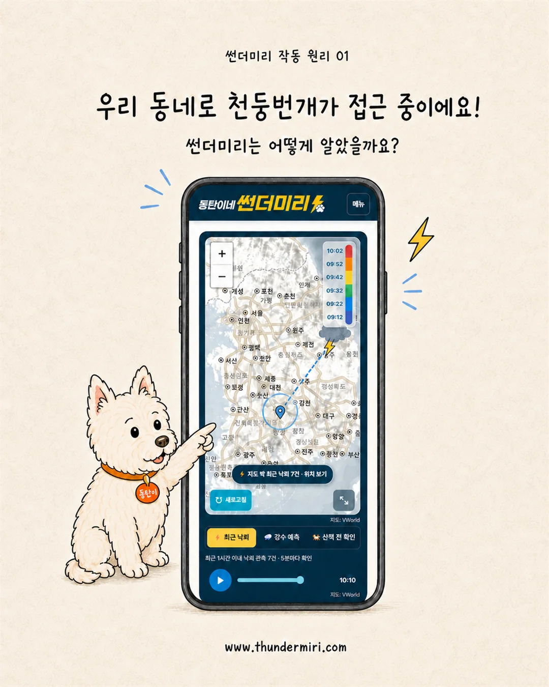

제작스토리
폭우로 작업실이 침수된 날부터였습니다.
그날 이후 동탄이는 천둥과 빗소리에 크게 놀라기 시작했습니다. 병원에서 안정에 도움이 되는 약도 받았지만, 천둥이 언제 올지는 알 수 없었습니다. 이미 패닉이 시작된 뒤에는 늦었습니다.
필요한 것은 우리 동네에 천둥번개가 칠 수 있다는 걸 미리 아는 것이었습니다.제작스토리 더보기 →
우리 동네 50km 안에서 번개가 관측되면 알려드려요.
가까워지는지, 멀어지는지도 함께 알려드려요.

강수예측 자료를 불러오면 산책하기 좋은 시간을 알려드려요.
기상청 초단기 강수예측은 실제 날씨와 달라질 수 있어요.최근 1시간 이내 낙뢰 관측 정보 불러오는 중...
기상청 레이더 · 5분마다 갱신
도로명·지번·동네 이름으로 검색할 수 있어요.위치·주소 확인은 OpenStreetMap을 사용합니다.
기기 알림 허용이 필요해요.
제작스토리
그날 이후 동탄이는 천둥과 빗소리에 크게 놀라기 시작했습니다. 병원에서 안정에 도움이 되는 약도 받았지만, 천둥이 언제 올지는 알 수 없었습니다. 이미 패닉이 시작된 뒤에는 늦었습니다.
필요한 것은 우리 동네에 천둥번개가 칠 수 있다는 걸 미리 아는 것이었습니다.제작스토리 더보기 →
동탄이 변화과정 기록
저희 동탄이에게만 해당되는 개인적인 경험으로, 다른 친구들에게 동일하게 적용되리란 보장은 없습니다. 트라우마가 심한 친구들은 먼저 전문가 상담과 치료를 받아보시길 권합니다.
변화과정 더보기 →
🚨 필수 · 알림 설정
위치 등록만으로는 알림이 오지 않습니다. 아래 단계를 마치면 실제 천둥번개 알림을 받을 수 있어요.
그림을 보면서 Safari에서 썬더미리를 홈 화면에 추가해주세요.
그림으로 설치 방법 보기 Safari 버전에 따라 점 3개 대신 공유 아이콘(□↑)이 보일 수 있어요.